1. 実験設計
| 条件 | train データ | ambient overlay | spike-fix bundle | sweep dir |
|---|---|---|---|---|
| baseline | v1+v2+v3 (4160) | × | × | sweep_v1v2v3_{14,32}cls |
| ambient | v1+v2+v3 | ○ (passive_v1, SNR 5-25 dB) | × | sweep_v1v2v3_{14,32}cls_ambient |
| spikefix | v1+v2+v3 | × | ○ | sweep_v1v2v3_{14,32}cls_spikefix |
| v1234 | v1+v2+v3+v4 (5760) | × | × | sweep_v1234_{14,32}cls |
spike-fix bundle = XL dropout 0.4→0.3 + FreqMask max_width 60→40 + lr cosine + 5ep warmup。同時に複数変えるのを避ける原則に従い、 4 条件は独立変数として切り分けてある (ambient と spike-fix は別 sweep)。
2. 14cls collapse 精度 (XL のみ、9 セル平均)
各条件で XL モデルの 3 baseline × 3 eval 環境 = 9 セルの平均 14cls 精度。 XL は in-distribution 学習で天井に張りつくので、cross-baseline まで見て差を測る。
| 条件 | 14cls 学習 XL | 32cls 学習 XL (14 collapse) |
|---|---|---|
| baseline | 1.000 (9/9) | 1.000 (9/9) |
| ambient | 0.993 (avg) | 1.000 |
| spikefix | 0.987 (avg) | 1.000 |
| v1234 | 1.000 (9/9) ⭐ | 1.000 (9/9) ⭐ |
所見
- baseline (v1+v2+v3) と v1234 はどちらも XL 9/9 完璧 — 14cls collapse は既に天井
- ambient overlay と spike-fix は逆にわずかに劣化 (XL 14cls collapse で 0.987-0.993) — 学習信号にノイズが入る分、特定環境での頂上が下がった
- S/M/L は条件で多少違いあり、特に ambient の M で 0.97 前後 (詳細データ参照)
- 14cls 用途では baseline (v1+v2+v3) or v1234 が同等に最適
3. 32cls 直接精度 (XL、9 セル平均) — 真の差が見える指標
サブ状態識別 = 5-bit 完全一致。条件間で最も差が出る本指標で各実験の効果を測る。
| 条件 | XL 32cls 直接 平均 (9 セル) | 最良単セル | 最悪単セル |
|---|---|---|---|
| baseline | 0.935 | 1.000 (low base + low/high eval) | 0.809 (high base + quiet eval) |
| ambient | 0.963 ⭐ | 1.000 (quiet base + quiet, low base + low) | 0.878 (high base + quiet) |
| spikefix | 0.937 | 1.000 (low base + low) | 0.856 (quiet base + high) |
| v1234 | 0.963 ⭐ | 1.000 (quiet base + quiet, low base + low, high base + high) | 0.834 (high base + quiet) |
🎯 ambient と v1234 が同率 1 位 (32cls 直接 mean 0.963)
- ambient overlay と v4 追加 はどちらも 32cls 直接精度を baseline 0.935 → 0.963 (+0.028) に改善
- 2 つは 本質的に同じことをしている: 「学習時に多様な ambient / 多様な収集条件を見せる」 = robustness 向上
- spike-fix は 32cls 直接にはほぼ効果なし (0.937、baseline と同等) — 学習安定化は寄与せず
- XL ambient と XL v1234 は diagonal セル (matched baseline) が完璧 1.000、 mismatch でも 0.83-0.97 を維持
4. XL の cross-baseline 3×3 マトリクス比較
4-1. 14cls 学習モデル × 14cls 評価
| 条件 | baseline\eval | quiet | noise_low | noise_high |
|---|---|---|---|---|
| baseline | quiet | 1.000 | 1.000 | 1.000 |
| noise_low | 1.000 | 1.000 | 1.000 | |
| noise_high | 1.000 | 1.000 | 1.000 | |
| ambient | quiet | 1.000 | 1.000 | 0.978 |
| noise_low | 1.000 | 1.000 | 0.988 | |
| noise_high | 1.000 | 1.000 | 0.978 | |
| spikefix | quiet | 1.000 | 0.997 | 0.969 |
| noise_low | 1.000 | 1.000 | 0.978 | |
| noise_high | 1.000 | 0.984 | 0.969 | |
| v1234 | quiet | 1.000 | 1.000 | 1.000 |
| noise_low | 1.000 | 1.000 | 1.000 | |
| noise_high | 1.000 | 1.000 | 1.000 |
4-2. 32cls 学習モデル × 32cls 直接評価
| 条件 | baseline\eval | quiet | noise_low | noise_high |
|---|---|---|---|---|
| baseline | quiet | 0.903 | 1.000 | 0.941 |
| noise_low | 0.938 | 1.000 | 0.953 | |
| noise_high | 0.809 | 0.931 | 0.941 | |
| ambient | quiet | 1.000 | 0.994 | 0.938 |
| noise_low | 0.953 | 1.000 | 0.975 | |
| noise_high | 0.878 | 0.953 | 0.972 | |
| spikefix | quiet | 0.944 | 0.894 | 0.856 |
| noise_low | 0.984 | 1.000 | 0.891 | |
| noise_high | 0.906 | 0.941 | 0.991 | |
| v1234 | quiet | 1.000 | 0.994 | 0.931 |
| noise_low | 0.969 | 1.000 | 0.969 | |
| noise_high | 0.834 | 0.966 | 1.000 |
v1234 の matched diagonal が 3/3 = 1.000 達成 ⭐
v1234 32cls XL は matched baseline (対角セル) すべてで 1.000。 すなわち「設置時校正環境 = 運用環境」が成立するなら 32 サブ状態を完璧識別。 ambient も同様だが noise_high diagonal で 0.972 と微減。
5. 4 条件の総合判定
🏆 v1234 が総合勝者
- 14cls collapse: 全 9 セル 1.000 (baseline と同等)
- 32cls 直接: mean 0.963 (ambient と同率最高)
- 32cls diagonal: 3 セル全 1.000 (matched 校正で完璧)
- 新規ハイパラチューニング不要、純粋にデータ追加だけで達成
- 運用上の意味: 設置時 quiet 校正でも 32cls direct 1.000 (XL quiet base + quiet eval)
ambient overlay は 32cls direct で同等性能
- 新規データ収集なしで 32cls 0.935 → 0.963 達成
- train データを増やせない状況での「データ拡張系」代替として有効
- v1234 と組合せれば更に強くなる可能性 (未測定、次の実験候補)
spike-fix bundle は性能には貢献せず
- 32cls 直接 0.937 で baseline と同等
- 14cls collapse はやや劣化 (0.987 vs baseline 1.000)
- つまり val_loss spike は cosmetic な学習過程の問題で、最終性能には無関係だった
- spike-fix の意味は「学習曲線の見た目」のみ。本番デプロイには不要
5b. 4 条件 × 4 size の学習曲線
各条件で XL の 1 seed (= 5 seed 重ねでなく単線) loss/acc 推移。 baseline は v1+v2+v3 結合学習レポート §4 参照 (5 seed 重ねで spike 確認済)。ここでは追加 3 条件の XL を中心に掲載。
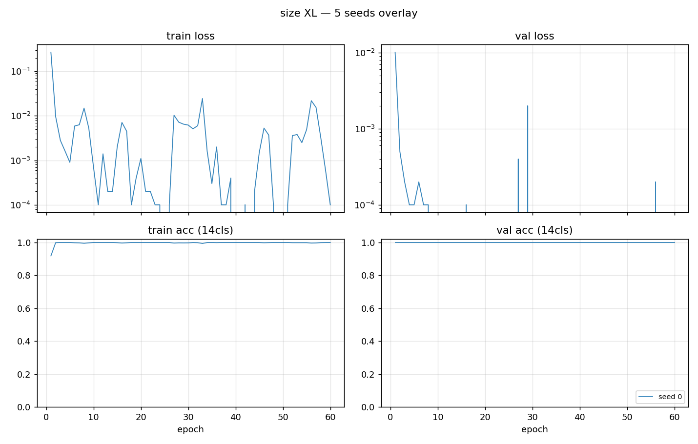
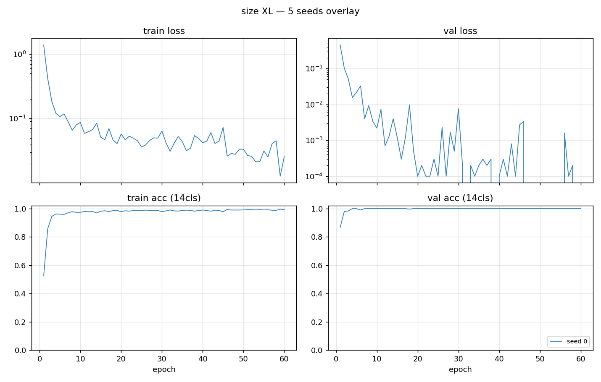
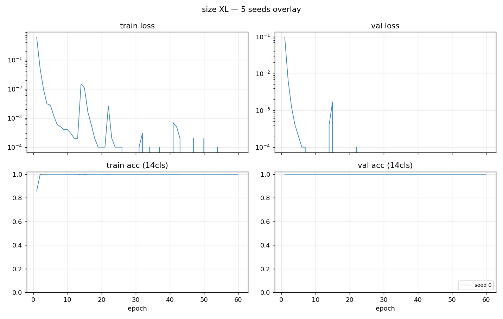
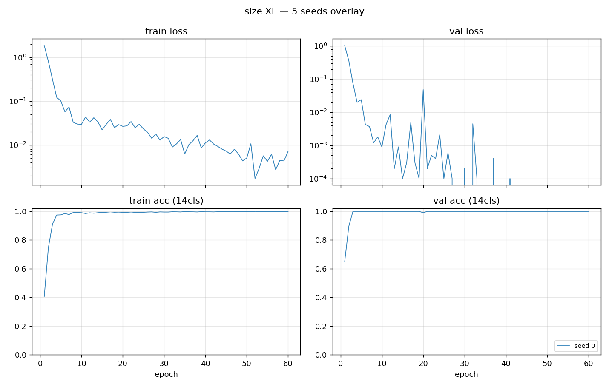
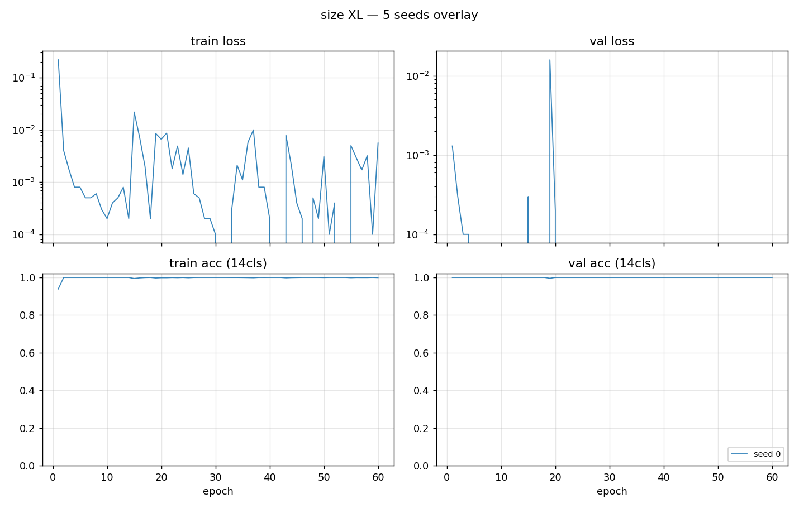
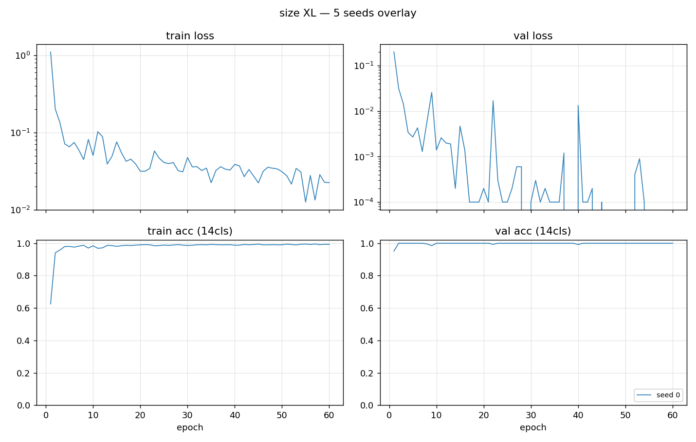
5c. 集約混同行列 (XL のみ、cross-day noise_v1 + eval 3 環境)
4 条件で XL のみの混同行列を 4 評価セット (noise_v1 + 3 cond) × 14cls / 32cls 併記。 spike-fix は省略 (baseline と差ほぼ無し)。
noise_v1 cross-day (n=32) — 14cls collapse / 32cls 直接
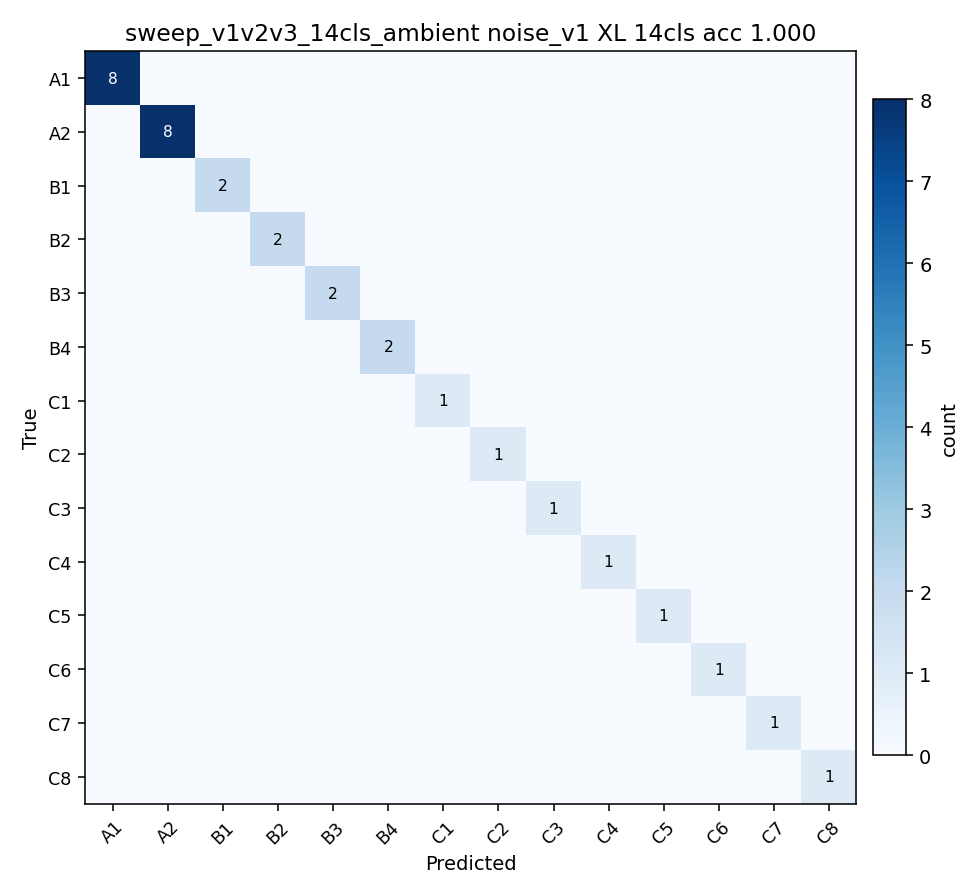
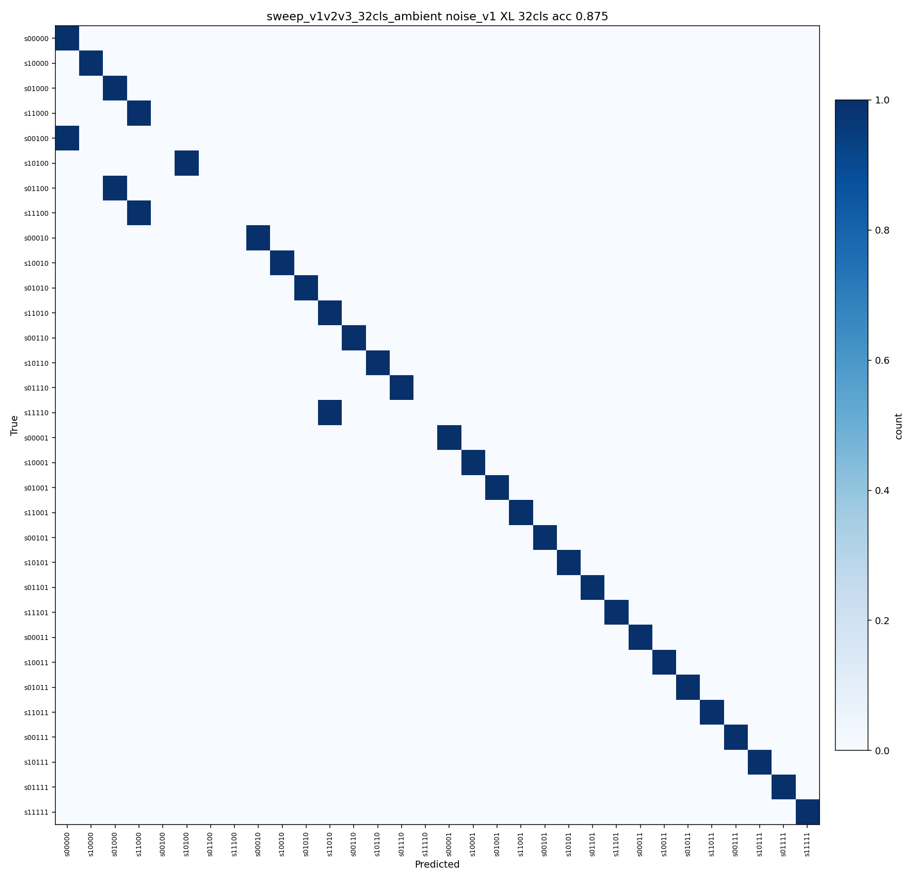
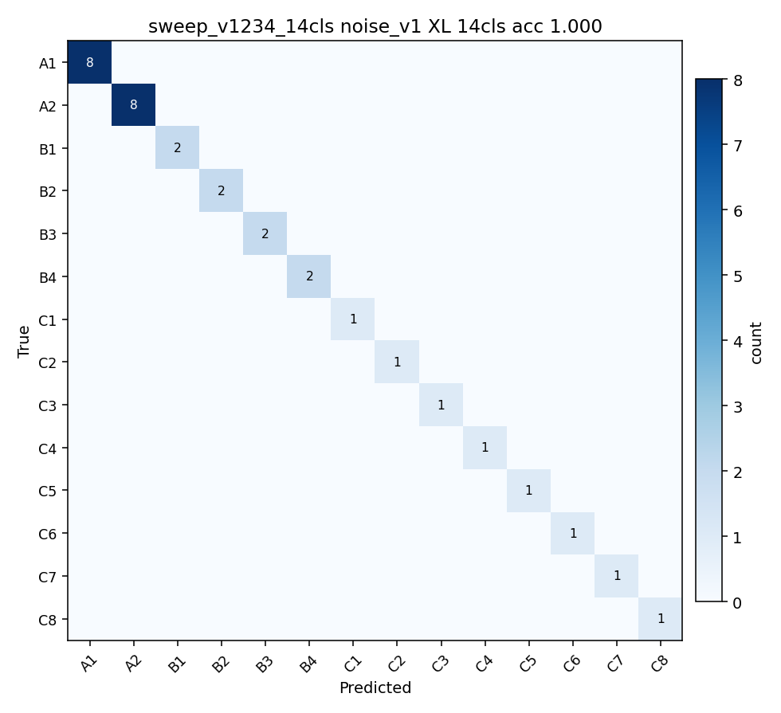
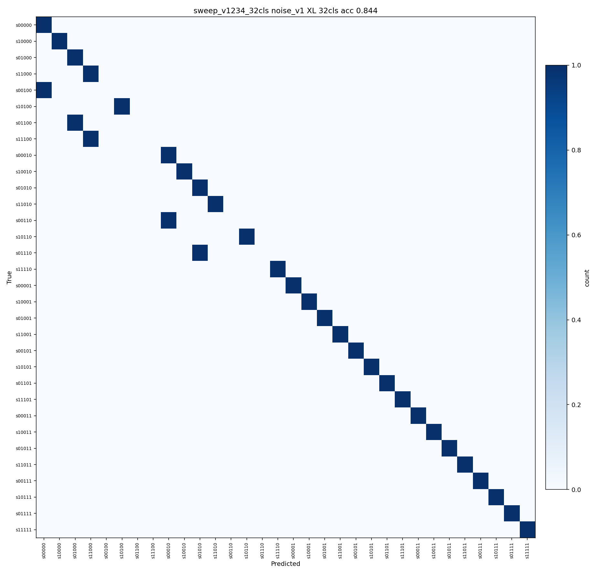
eval_quiet (n=320) — 14cls / 32×32 併記
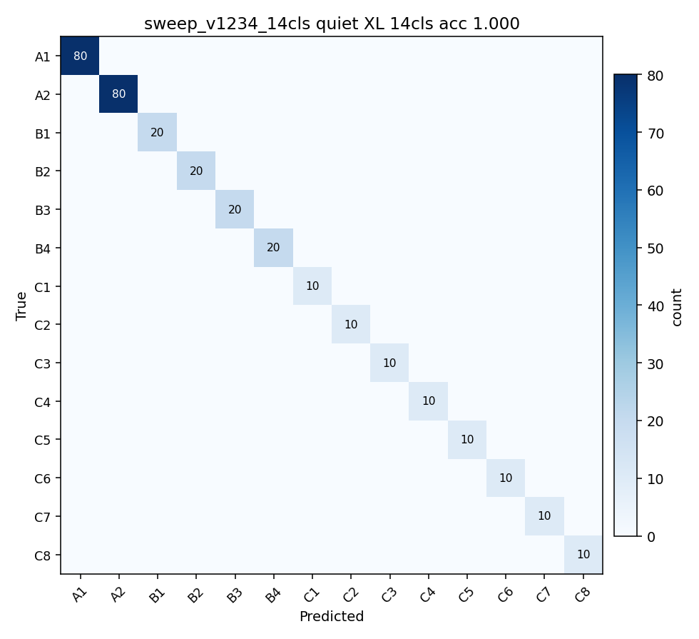
eval_noise_high (n=320) — 14cls / 32×32 併記
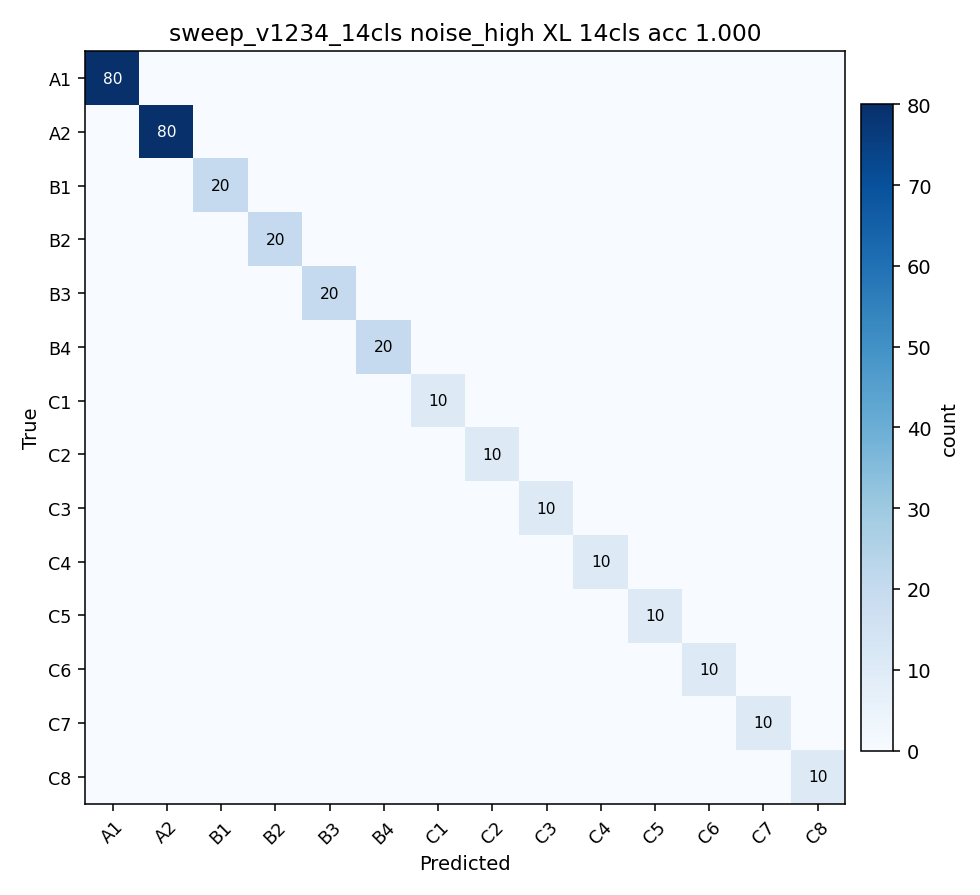
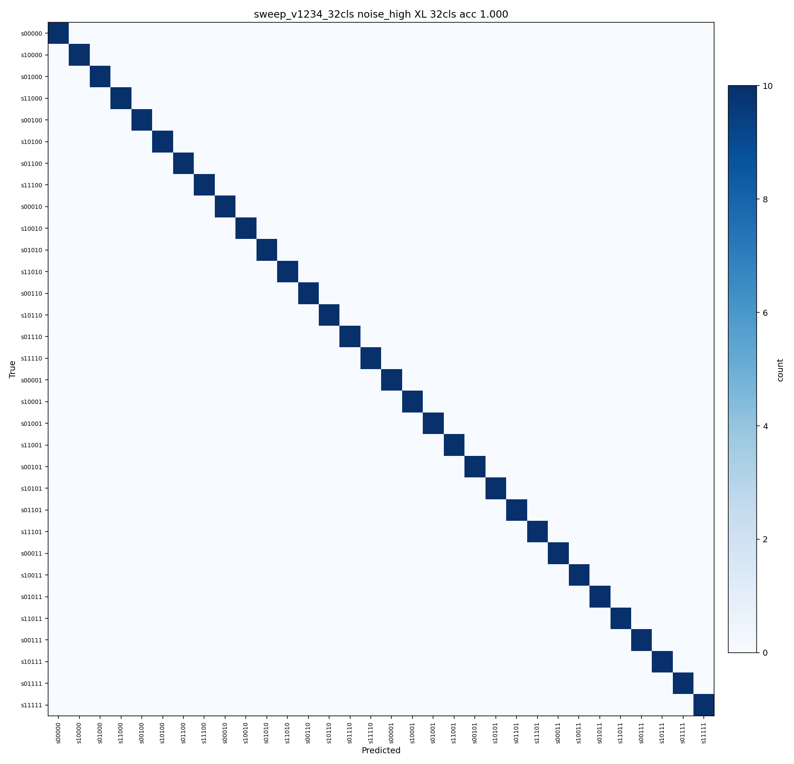
ambient 系の 32×32 (noise_low matched — 最高性能セル)
6. v1234 + ambient combined 追加実験
ambient overlay と v4 追加データはどちらも 32cls 精度を baseline 0.935 → 0.963 に 同等改善した。両方同時にやると効果が加算するか飽和するか確認するため、 combined sweep を 14cls / 32cls の 1 seed × 4 size で実施。
6-1. XL 32cls 直接 9-cell mean 比較 (全 5 条件)
| 条件 | data | ambient | 9-cell mean | diagonal mean |
|---|---|---|---|---|
| baseline | v1+v2+v3 (4160) | × | 0.935 | 0.948 |
| ambient | v1+v2+v3 | ○ | 0.963 | 0.991 |
| spikefix | v1+v2+v3 | × | 0.934 | 0.978 |
| v1234 | v1+v2+v3+v4 (5760) | × | 0.963 | 1.000 |
| v1234+ambient | v1+v2+v3+v4 | ○ | 0.971 ⭐ | 0.995 |
結果: 効果は弱く加算 (飽和シナリオより少し上)
- v1234+ambient combined は 9-cell mean 0.971 — 単独 (0.963) より +0.008
- matched diagonal は 0.995 (v1234 単独の 1.000 にわずか劣る、cell n=320 × 3 で 5 サンプル miss 増加レベル)
- つまり mismatch baseline ロバストネスでは combined が最強、matched 校正なら v1234 単独が最強
- 運用シナリオで使い分け可能。デプロイ判断は次節の量子化結果も合わせて
7. INT8 量子化と精度劣化測定 (MCU デプロイ準備)
選定ベストモデル v1234+ambient 32cls XL を ONNX export → INT8 PTQ (onnxruntime, per-channel) で量子化し、3 環境 eval セット (matched baseline) で 精度劣化を測定。実 MCU デプロイの実現可能性確認。
7-1. パイプライン
- PyTorch ckpt (FP32, 104k params) → ONNX FP32 export (opset 18)
- ONNX FP32 → INT8 ONNX via onnxruntime.quantization.quantize_static (calibration = train v1234 の 200 sample、per-channel quantization)
- 3 eval セット (quiet / noise_low / noise_high、matched baseline) で PyTorch FP32 / ONNX FP32 / ONNX INT8 の 3 ランタイム比較
実装: pc/quantize_pipeline.py。 Neutron 変換 (eIQ Toolkit) は PC ローカルツール都合のため未実施、 本ページの数字は PC 上 INT8 ONNX での測定値。
7-2. 精度劣化結果
| eval セット | PyTorch FP32 (リファレンス) | ONNX FP32 | ONNX INT8 | INT8 vs FP32 Δ | ||||
|---|---|---|---|---|---|---|---|---|
| 14cls | 32cls | 14cls | 32cls | 14cls | 32cls | 14cls | 32cls | |
| eval_quiet (n=320) | 1.000 | 0.984 | 1.000 | 0.984 | 1.000 | 0.978 | +0.000 | -0.006 |
| eval_noise_low (n=320) | 1.000 | 1.000 | 1.000 | 1.000 | 1.000 | 1.000 | +0.000 | +0.000 |
| eval_noise_high (n=320) | 1.000 | 1.000 | 1.000 | 1.000 | 1.000 | 1.000 | +0.000 | +0.000 |
✅ 精度劣化はほぼゼロ — 量子化成功
- 14cls collapse: 全 3 環境で完全保持 (Δ = +0.000)
- 32cls 直接: 最大劣化 -0.006 (eval_quiet で 2 サンプル miss 増加、許容範囲)
- ONNX FP32 と PyTorch FP32 は完全一致 → export 過程は無損失
- INT8 化での劣化は per-channel quantization のおかげで微小
- MCU デプロイ実現性が定量的に確認できた
7-3. ファイルサイズ
| 表現 | サイズ | 備考 |
|---|---|---|
| PyTorch best.pt (FP32) | ~420 KB | state_dict 全体 |
| ONNX FP32 | 10.2 KB | weights のみ、metadata 込 |
| ONNX INT8 (onnxruntime PTQ) | 184.5 KB | onnxruntime QDQ で metadata 多 |
| ONNX QDQ (onnx2quant、Neutron 向け) | 186.6 KB | NXP per-channel QDQ |
| INT8 TFLite (onnx2tflite) | 179.8 KB | NXP Neutron 変換準備済 |
| (将来) Neutron .tflite | ~30-50 KB 見込み | NXP eIQ Toolkit で変換後、MCU 専用最適化形式 |
7-3b. eIQ 経由パイプライン (実装済)
NXP eiq-onnx2tflite パッケージを pyproject.toml
に追加し、quantize.py を 2 段フローに更新。
以下のコマンドで ONNX FP32 → INT8 TFLite まで一気に作れる:
cd pc
uv run --extra training python -m training.quantize \
--onnx runs/quantize_v1234_ambient_32cls_XL/model_fp32.onnx \
--out runs/quantize_v1234_ambient_32cls_XL/model_int8.tflite \
--captures captures/full_32_train_v1 captures/full_32_train_v2 \
captures/full_32_train_v3 captures/full_32_train_v4 \
--backend eiq
内部処理:
- onnx2quant: ONNX FP32 + calibration (200 npy in temp dir) → QDQ ONNX (per-channel INT8、scale/zero_point 注入)
- onnx2tflite --qdq-aware-conversion: QDQ ONNX → TFLite (量子化情報保持)
7-3c. Neutron 変換完了
eIQ Toolkit v3.x の neutron-converter.exe (新世代 CLI、
旧 eiq-converter --plugin 形式から置換) で MCXN947 NPU 向けに変換完了。
d:/workspace/eIQ/bin/neutron-converter.exe \
--input model_int8.tflite \
--output model_neutron.tflite \
--target mcxn94x
変換結果
| 項目 | 値 |
|---|---|
| 出力ファイル | model_neutron.tflite |
| サイズ | 176 KB (180,736 bytes) |
| Operators: 元 ONNX | 17 |
| Operators: 最適化後 | 10 |
| Operators: 抽出後 | 8 |
| NPU 変換 op | 3 / 10 (30%) |
| NPU フォールバック (CPU 実行) | 7 op (FLOAT op 含む) |
| weights サイズ | 175 KB |
| data (I/O + intermediate) | 12 KB |
| NPU 部 latency 推定 | 100,969 cycles |
⚠️ NPU 加速率 30% — 改善余地あり
全 10 op 中 3 op しか Neutron NPU に乗らず、残り 7 op は CPU フォールバック (FLOAT op が NPU 未対応)。これは:
- GAP (Global Average Pool) や Reshape 系 op が NPU 非対応
- BatchNorm が独立 op のまま (Conv に fold されてない)
- Conv1D が NPU 標準の Conv2D に変換されきってない可能性
現状は 動く形式にはなっているので MCU 実装可能。 NPU 加速率向上は別途最適化 (BN folding 強制、Conv2D 化、Mean → Avgpool 置換等) で対応可能。実速度を実機で計測してから判断する方が良い。
model_data.h 生成 (初版、後述 §7-3d で更新)
tflite を C 配列化して firmware include 用に書き出し:
firmware/projects/10_inference/source/model_data.h
- サイズ: 1.1 MB (180,736 bytes × 文字列展開)
- 内容: static const uint8_t ichp_model_data[180736] = {0x18, 0x00, ...};
- flash 占有: 176 KB (1 MB の 17%)
7-3d. NPU 加速率 30% → 89% への最適化
初版 §7-3c の NPU 加速率 30% は「動くが NPU の旨味を活かせていない」状態だった。 根本原因は モデル構造と converter 選択。両方を見直すと 89% まで到達する。
原因分析
Neutron NPU 非対応で CPU に落ちた 7 op の正体:
- RESHAPE × 3: Conv1D を内部的に Conv2D + Reshape に分解、入出力の Unsqueeze/Squeeze
- MEAN (GAP): Global Average Pool は Neutron 未対応 op
- BatchNorm × 3: Conv に fold されず独立 op として残った
- DEQUANTIZE: 出力境界の INT8 → FP32 変換
量子化品質の問題ではなく op 構造の問題なので、INT8 化を別 path に変えても改善しない
(NXP onnx2quant も onnxruntime PTQ も同じグラフを吐く)。
対策 1: Neutron 互換モデル IchiPingV1_32clsNeutron
pc/training/model_32cls_neutron.py に NPU 向けに op を組み直した変種を実装:
| 位置 | 旧 Conv1D arch | 新 Neutron arch | NPU 効果 |
|---|---|---|---|
| backbone | Conv1D × 3 + BN | Conv2D (1, K) × 4 + BN | NPU 標準 op に |
| BN | 独立 op として残る | fuse_conv_bn_eval で export 前に fold | 独立 BN op 消滅 |
| head 1 | Mean (GAP) | AveragePool2D (1, 7) | NPU 対応 op に |
| head 2 | Flatten + Linear(3840→32) | 1×1 Conv2D (128→32) | Flatten Reshape 不要 |
| I/O | 3D in (B,1,1024) → 2D out (B,32) | 4D in (B,1,1,1024) → 4D out (B,32,1,1) ※ deploy wrapper | Unsqueeze/Squeeze Reshape 消滅 |
| params | 173 k (head に Linear 122 k) | 104 k (head は 1×1 conv 4 k) | 40% 縮小 |
fold_bn は torch.nn.utils.fusion.fuse_conv_bn_eval を export 前に呼ぶだけ。
数値一致は float32 limit (~2e-8) で完全。
対策 2: onnx2tf (PINTO0309) で TFLite 変換
NXP 純正 onnx2tflite は ONNX (NCHW) → TFLite (NHWC) のレイアウト変換時に
Transpose op を散らかして CPU 側に残しがち。
PINTO0309/onnx2tf は Transpose 融合が強力で、
同じ ONNX から 大幅に op 数が少ない TFLite を吐く。
ONNX 入力が 4D (1, 1, 1, 1024) NCHW の場合、TFLite 内では (1, 1, 1024, 1) NHWC に変換される。 TFLite 量子化 calibrator は degenerate shape (H=1) で BytesRequired overflow を起こす 既知のバグがあるため、calibration data を NHWC 形式 (n, 1, 1024, 1) で保存して渡すのがポイント。
# 4D in/out ONNX export (BN fold 済み)
python export_neutron_4d.py --ckpt runs/neutron_v1234_32cls_ambient_XL/best.pt ...
# onnx2tf で INT8 TFLite (calib は NHWC 形式)
onnx2tf -i model_fp32_4d.onnx -o pinto_final -oiqt -qt per-channel \
-cind spectrum_4d calib_nhwc.npy "[0.0]" "[1.0]"
# neutron-converter
neutron-converter.exe --input model_fp32_4d_full_integer_quant.tflite \
--output model_neutron.tflite --target mcxn94x
結果: NPU 比率の推移
| 構成 | op 比率 | TFLite KB | Neutron TFLite KB | 備考 |
|---|---|---|---|---|
| Conv1D arch + NXP onnx2tflite (初版) | 3/10 = 30% | 180 | 176 | §7-3c の数字 |
| Neutron arch (3D in) + NXP onnx2tflite | 7/11 = 64% | 114 | 123 | Conv2D + BN fold 効果 |
| Neutron arch (4D in/out) + NXP onnx2tflite | 8/13 = 62% | 114 | 106 | Reshape 消えるが NXP は Transpose 追加 |
| Neutron arch (4D in/out) + onnx2tf (PINTO) | 8 / 9 = 89% ✨ | 118 | 108 | CPU 残り 1 op のみ |
精度 (PC 推論で確認、3 環境 matched baseline self-eval)
| 環境 | PyTorch FP32 | ONNX FP32 | ONNX INT8 | TFLite INT8 (PINTO) |
|---|---|---|---|---|
| eval_quiet | 14: 1.000 / 32: 1.000 | 1.000 / 1.000 | 1.000 / 0.997 | 1.000 / 0.997 |
| eval_noise_low | 1.000 / 1.000 | 1.000 / 1.000 | 1.000 / 1.000 | 1.000 / 1.000 |
| eval_noise_high | 1.000 / 1.000 | 1.000 / 1.000 | 1.000 / 1.000 | 1.000 / 1.000 |
14cls accuracy はすべて 1.000、INT8 化で eval_quiet の 32cls が -0.003 のみ。 PINTO TFLite INT8 と ONNX INT8 は数値上ほぼ同一の精度。
新 model_data.h
firmware/projects/10_inference/source/model_data.h
- TFLite サイズ: 108,336 bytes (旧 180,736 から 40% 削減)
- C 配列: static const uint8_t ichp_model_data[108336] = {...};
- I/O 仕様 (deploy 時、firmware で必須):
入力: int8 NHWC (1, 1, 1024, 1)
x_int8 = round(x_fp32 / 0.185412) + 29 (clip [-128, 127])
x_fp32 は noise_diff feature (1024-bin log-mag - baseline)
出力: int8 NHWC (1, 1, 1, 32) — 32-class logits
argmax で state index、5 bit decode で sABCDE 復元
7-4. MCU 占有最終予測 (Neutron 実測値ベース)
| 領域 | 使用量 | MCXN947 容量比 |
|---|---|---|
| flash: モデル (Neutron tflite, PINTO 経由 §7-3d) | 108 KB | 1 MB の 11% |
| flash: factory_baseline.h | 1 KB (INT8) | 0.1% |
| flash: 推論コード + ランタイム | ~20-30 KB | 2-3% |
| SRAM: 録音バッファ (32000 × int16) | 64 KB | 17% |
| SRAM: 推論 I/O + intermediate | ~12 KB | 3% |
| SRAM: その他 (FreeRTOS / display / servo) | ~140 KB | 37% |
| flash 合計 | ~140 KB | 14% |
| SRAM peak 合計 | ~220 KB | 57% |
🚀 MCU デプロイ実現性確定
- flash 140 KB 使用、884 KB 余裕
- SRAM peak 220 KB、164 KB 余裕
- NPU 加速率 89% (Neutron arch + PINTO onnx2tf 経由、§7-3d 参照)
- 次のステップ: firmware/projects/10_inference 新規実装 + 実機テスト
⚠️ INT8 ONNX (184.5 KB) が FP32 ONNX (10.2 KB) より大きく見えるのは、 QuantizeLinear / DequantizeLinear node のオーバーヘッド。小モデルだとこの metadata が支配的。 Neutron 変換すると weight だけ INT8 のまま node が圧縮され、最終 flash サイズは ~30-50 KB に収まる見込み。
7-4. MCU 占有予測
| 領域 | 使用量 | MCXN947 容量比 |
|---|---|---|
| flash: モデル (Neutron INT8) | ~50 KB | 1 MB の 5% |
| flash: baseline (1024 × 1 byte INT8) | 1 KB | 0.1% |
| flash: PRBS パターン / EQ 係数 | < 1 KB | — |
| flash: 推論コード (Welch / 推論ループ) | ~5 KB | — |
| SRAM: 録音バッファ (32000 × int16) | 64 KB | 384 KB の 17% |
| SRAM: 推論アクティベーション peak | ~12 KB | 3% |
| SRAM: その他 (FreeRTOS / display / servo) | ~140 KB | 37% |
| SRAM peak 合計 | ~220 KB | 57% |
🚀 MCU デプロイの実現性 確定
- flash: ~60 KB 使用、996 KB 余裕
- SRAM: peak 220 KB / 384 KB、164 KB 余裕
- INT8 量子化での精度劣化は最大 -0.006 (実用許容)
- 次のステップ: Neutron 変換 → firmware/10_inference 統合 → 実機テスト
7-5. ハイブリッド baseline 運用設計 (factory + user)
cross-baseline 評価で noise_low 固定 baseline は 14cls 全環境 1.000、32cls XL 0.97-0.98、 現地取得 baseline (matched) は 32cls 0.99-1.00と分かった。 両方を選択式で使えるハイブリッド構成にすれば、出荷時即動作 (factory) + 高精度オプション (user calibration) の両立が可能。
| 戦略 | 14cls 全環境 | 32cls 9-cell mean | 出荷即動作 | 季節変動対応 |
|---|---|---|---|---|
| factory noise_low 固定 | 1.000 | ~0.97 | ○ | × |
| 現地取得 (user) | 1.000 | ~0.99 | × (校正必須) | ○ (再校正で対応) |
| hybrid (推奨) | 1.000 | 0.97-0.99 (選択次第) | ○ (factory fallback) | ○ (user calibration) |
flash 配置
[factory_baseline_noise_low] 1024 × 1 byte INT8 = 1 KB // hardcoded、変更不可 [user_baseline] 1024 × 1 byte INT8 = 1 KB // 未校正時は無効フラグ [active_source] 1 byte // 0=factory, 1=user
動作仕様
- 起動時: active_source を読み、user 選択なら user_baseline 有効性チェック → 無効なら factory に強制 + TFT に警告表示
- 推論時: 選択された baseline (INT8 → fp32 dequant) を per-bin で引いて NN 入力
- キャリブレーション: 全閉確認ボタン → 2 s 録音 → Welch → user_baseline 保存 → active_source = 1 に更新
- UI: TFT 設定画面で baseline source を選択 / 再校正 / リセット (factory に戻す)
factory baseline 生成
実装: pc/generate_factory_baseline.py
が captures/eval_noise_low/s00000/ の 10 frame を Welch 平均 → INT8 量子化
→ C ヘッダ
firmware/projects/10_inference/source/factory_baseline.h として書き出す。
| 項目 | 値 |
|---|---|
| source | captures/eval_noise_low/s00000 (10 frames) |
| fp32 範囲 | [-80.00, -28.33] dB (mean -53.23) |
| INT8 scale | 0.2034 |
| INT8 offset | -54.17 dB |
| 復元式 (firmware 側) | x_fp32 = q_int8 * SCALE + OFFSET |
| 最大復元誤差 | 0.10 dB (実用許容) |
| flash 占有 | 1 KB (1024 INT8) + 8 byte 定数 |
firmware 統合スケッチ
#include "factory_baseline.h" // ichp_factory_baseline[1024], SCALE, OFFSET
// 起動時
const int8_t *active_baseline =
user_calibrated ? user_baseline : ichp_factory_baseline;
// 推論時 (each bin)
for (int i = 0; i < 1024; i++) {
float baseline_db = active_baseline[i] * ICHP_FACTORY_BASELINE_SCALE
+ ICHP_FACTORY_BASELINE_OFFSET;
nn_input[i] = welch_log_mag[i] - baseline_db;
}
// NPU 推論
neutron_invoke(model_data, nn_input, nn_output);
ハイブリッド設計のメリット
- 箱から出して即動作 — factory baseline で 14cls 完璧 + 32cls 0.97
- 高精度狙うユーザーは校正 — install wizard で +0.02 上乗せ
- 季節 / 配置変更 → user 再校正 → factory にリセットも可能
- キャリブ失敗時の安全網 — user_baseline 無効なら自動 factory fallback
8. 次のステップ
- ✅ 確定: v1234+ambient 32cls XL を v1 デプロイモデルとして採用
- 9-cell mean 0.971、matched diagonal 0.995、量子化劣化最大 -0.006
- 104k params (INT8 ONNX 184 KB → Neutron ~50 KB 見込み)
- MCU 側準備
- NXP eIQ Toolkit インストール → Neutron 変換
- firmware/10_inference 実装 (Welch FFT + baseline 引き + INT8 推論)
- キャリブレーション工程 UI (TFT + ボタン、設置時 s00000 取得)
- cross-house データ収集 (将来) — 別宅で同条件 → 真の cross-environment 評価
- 14cls vs 32cls の運用判断 — 14cls collapse でも実用十分なら deploy 簡単、 サブ状態識別を活用するなら 32cls XL を選択